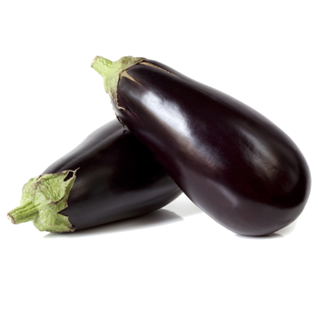
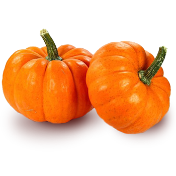
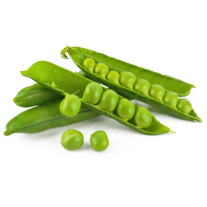
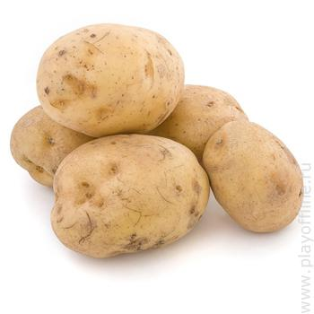
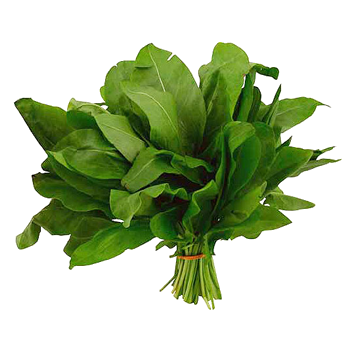
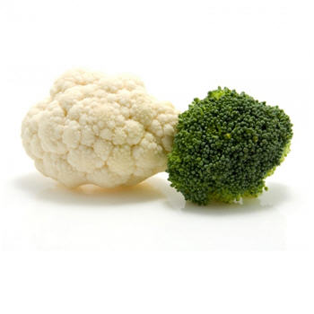
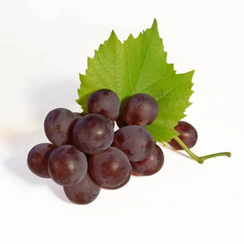

В зрелых плодах баклажанов содержится много клетчатки, пищевых волокон, пектин,
органические кислоты, каротин, дубильные вещества, натуральный сахар, минеральные
и биологически-активные вещества. Среди минералов следует отметить наличие алюминия,
кобальта, фосфора, железа, меди, цинка и марганца.

Тыква обыкновенная — однолетнее, очень распространенное растение, которое выращивают
на огородах и баштанах. Тыква стелится по земле, имеет волосистый стебель и крупные,
жесткие, лопастные листья. Может цепляться за другие растения или предметы с помощью
ветвистых усиков.

Горох – самоопыляющееся однолетнее травянистое растение с хорошо разветвленной
стержневой корневой системой, ветвящимся стеблем и непарноперистыми сложными листьями,
черешки которых оканчиваются цепкими усиками, из семейства Бобовых.


Клубень картофеля представляет собой разросшуюся почку, состоящую из наполненных
крахмалом клеток, снаружи покрытую тонким слоем пробковой ткани.
На поверхности клубня располагаются пазушные почки, так называемые глазки,
из которых развиваются молодые побеги.


Щавель – название рода растений из семейства Гречишных. История культивирования
этой овощной культуры началась несколько тысячелетий назад, упоминания о щавеле
встречаются в работах Вергилия и Плиния Старшего, а Авиценна в своем
"Каноне врачебной науки" описал его лечебные свойства.

Цветная капуста — однолетнее яровое или озимое растение. Корневая система
мочковатая, близко расположенная к поверхности почвы. Стебель цилиндрический,
15—70 см высоты, с горизонтально расположенными или прямо или косо вверх
направленными листьями, весьма часто спиральнообразно изогнутыми.


Виноград - название куста и одноименного плода. Виноград – одно из первых растений,
которое начал культивировать человек. Первые упоминания о винограде датируются 5-6
тысячелетиями до н.э. – уже тогда его выращивали в Египте и Месопотамии.